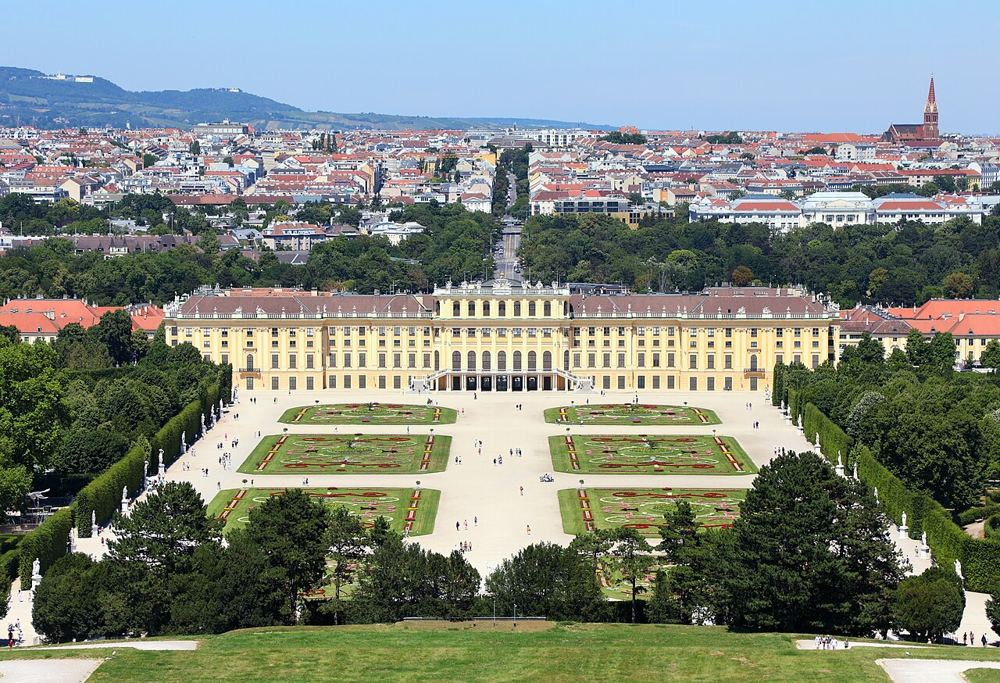

Parc du château de Schönbrunn et labyrinthe
Le parc est gratuit. Le labyrinthe de haies et l'aire de jeux qui l'accompagne sont payants et ouverts d'avril à début novembre. La montée vers la Gloriette est longue mais offre la plus belle vue.


Ce que les enfants vont aimer
Un labyrinthe de haies où il faut trouver la sortie.
Le parc ouvre tôt : venez le matin avant les groupes. Le labyrinthe ouvre d'avril à début novembre.
Autour du lieu
Toilettes, tables à langer, aires de jeux, eau potable, pharmacie et station les plus proches, avec le temps de marche.
- Toilettes : Toilettes publiques, à 2 min à pied (70 m) · payant
- Toilettes : Toilettes publiques, à 10 min à pied (390 m) · gratuit · accès fauteuil
- Table à langer : Toilettes avec table à langer, à 3 min à pied (100 m) · gratuit · accès fauteuil
- Table à langer : Toilettes avec table à langer, à 6 min à pied (230 m) · gratuit · accès fauteuil
- Aire de jeux : Labyrinthikon, à 3 min à pied (100 m) · payant
- Aire de jeux : Aire de jeux, à 3 min à pied (110 m)
- Eau potable : Point d'eau potable, à 2 min à pied (60 m) · gratuit
- Pharmacie : Maria Lourdes Apotheke, à 22 min à pied (850 m)
- Station : Schönbrunn, à 17 min à pied (660 m) · accès sans marche signalé
D'après OpenStreetMap, non vérifié sur place.
À combiner dans la journée
Zoo de Schönbrunn
Le plus vieux zoo du monde, avec des éléphants et des ours polaires.
À 16 min à pied (610 m) · 0–14 ans
Musée technique de Vienne
Une vraie locomotive et une mine sous la terre.
À 25 min à pied (960 m) · 4–14 ans
Haus des Meeres, l'aquarium
Des requins et des singes dans une grande tour.
À 3,5 km, en transports · 0–14 ans
S'il pleut : le plan B couvert
Questions fréquentes
Parc du château de Schönbrunn et labyrinthe : à partir de quel âge ?
Nous le conseillons de 0 à 14 ans. Un labyrinthe de haies où il faut trouver la sortie.
Parc du château de Schönbrunn et labyrinthe : combien de temps prévoir ?
Environ 2 h 30 sur place, sans compter le trajet.
Parc du château de Schönbrunn et labyrinthe : quand y aller pour éviter la foule ?
Le parc ouvre tôt : venez le matin avant les groupes. Le labyrinthe ouvre d'avril à début novembre.
Parc du château de Schönbrunn et labyrinthe : peut-on y aller avec une poussette ?
Facile en poussette. Peu ou pas de pavés signalés autour; 4 escaliers recensés à moins de 250 m, souvent contournables; station la plus proche : Schönbrunn, à 660 m, accès sans marche signalé.
Parc du château de Schönbrunn et labyrinthe : comment y aller ?
Schönbrunner Schloßstraße 47, 1130 Wien. Métro U4, station Schönbrunn.
Parc du château de Schönbrunn et labyrinthe : l'entrée est-elle gratuite ?
En partie : l'accès principal est libre, certaines zones ou activités sont payantes.
Fiche vérifiée le 29 octobre 2026. Horaires, tarifs et conditions d'accès changent souvent : vérifiez toujours sur le site officiel avant de partir. Tous les lieux de Vienne avec des enfants.